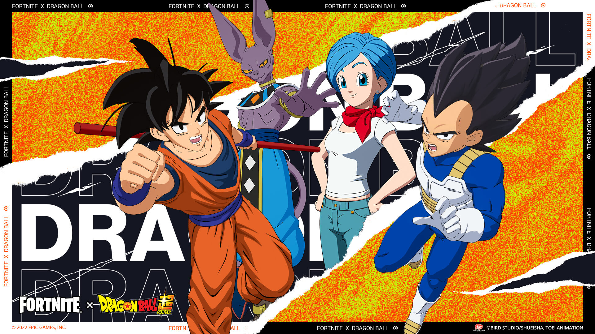
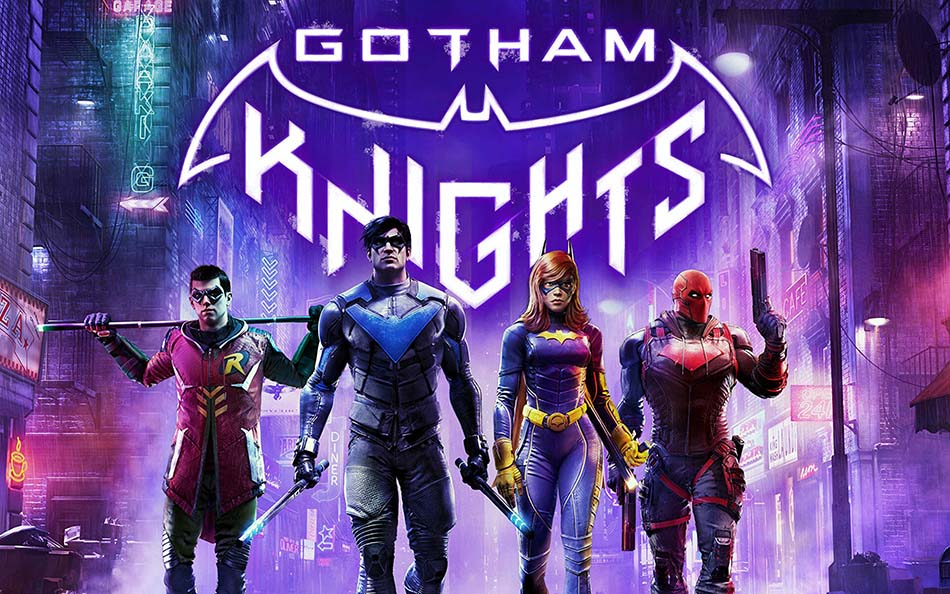

En esta seccion es donde vamos a encontrar todo tipo de noticias y novedades, no importa de que epoca vengas, ni el tipo de rol que te gusta, solo nos juntamos aca para saber que hay de nuevo con nustros juegos favoritos
Noticias

God of War Ragnarok nos prepara para la batalla
El God of War de 2018 llevó a nuestro Fantasma de Esparta directo a tierras nórdicas para verse las caras con algunos de los dioses más duros que los relatos mitológicos nos han presentado, pero ¿qué nuevas amenazas nos encontraremos en esta segunda entrega?

Dragon Ball llega a Fortnite en la última gran colaboración
Comenzó oficialmente el esperado cruce de mundos entre Fortnite y Dragon Ball, la legendaria obra creada por Akira Toriyama. El evento, que comenzó el 16 de agosto y durará hasta el 17 de septiembre. A partir del 19 de agosto, el battle royale inaugurará la Isla de Aventura de Dragon Ball, donde se podrá explorar lugares emblemáticos como el Palacio de Kamisama y la casa de Goku, todo arriba de la icónica Nube Voladora.

Warner Bros Montreal ya señala en el calendario la fecha de lanzamiento definitiva de Gotham Kngihts. La nueva aventura del universo DC en el videojuego debutará el próximo 25 de octubre en PS5, PS4, Xbox Series X|S, Xbox One y PC
Gotham Knights: Ya hay fecha de lanzamiento confirmada
Warner Bros Montreal ya señala en el calendario la fecha de lanzamiento definitiva de Gotham Kngihts. La nueva aventura del universo DC en el videojuego debutará el próximo 25 de octubre en PS5, PS4, Xbox Series X|S, Xbox One y PC

Buenas noticias para los fans del remake Final Fantasy VII: no se recortará nada de Rebirth y su secuela
La confirmación de que a partir del próximo año llegará Final Fantasy VII: Rebirth ha revitalizado nuevamente a Square Enix, que ha confirmado que su remake del mítico videojuego de la saga se completará supuestamente en tres partes, a pesar de que lo qeuria sacar en dos, todavia no es confirmo.
Marvel's Spider-Man Remastered en PC disfruta de un fuerte estreno en PC, aunque en términos de jugadores concurrentes no llega al de God of War. Se queda como el segundo mejor estreno de PlayStation en la plataforma.
El estreno de Marvel's Spider-Man para ordenadores y Steam Deck parece ser el segundo mejor de PlayStation en PC. Aunque los números conseguidos hasta el momento en pico de jugadores lo dejan justo por detrás de God of War.

Repasamos todas las novedades y detalles de la actualización 3.0 de Genshin Impact:
nuevos personajes, efectos y reacciones, escenarios, jefes... Semana de actualización importante en Genshin Impact. HoYoverse ha anunciado que la versión 3.0 del juego llegará este mismo 24 de agosto, se llamará 'El alba de las mil rosas' y nos abrirá las puertas de la región de Sumeru, la cuarta de las siete naciones principales de Teyvat. Además, esta actualización introducirá el elemento Dendro, el último del sistema de siete elementos de Genshin Impact.